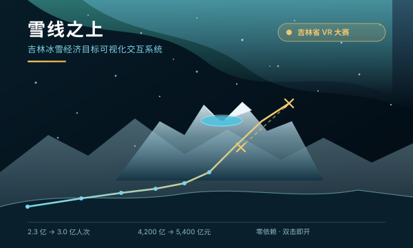
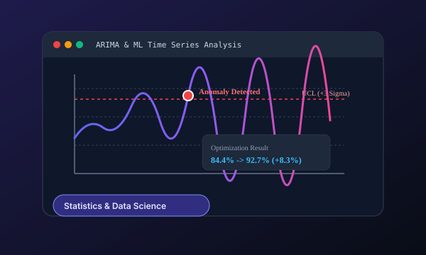
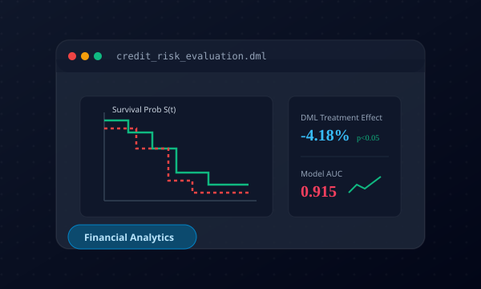
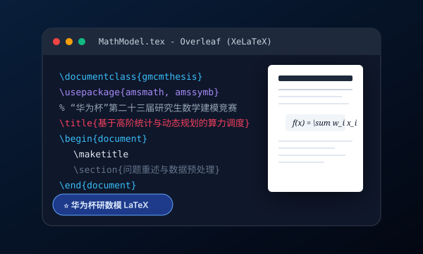
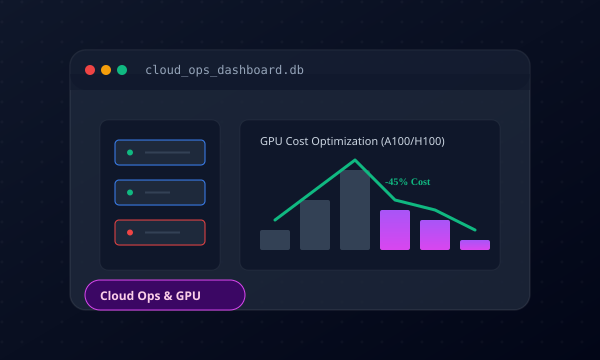
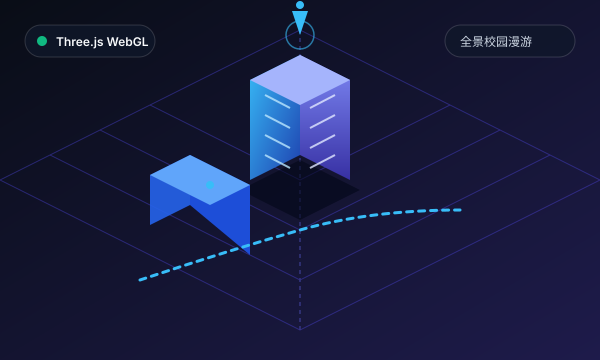
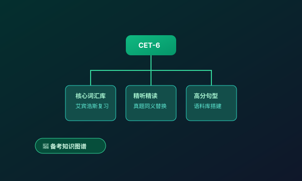

雪线之上 · 吉林冰雪经济目标可视化交互系统
围绕一个可实证核验的严肃课题展开：吉林省冰雪经济政策提出了哪些阶段目标？这些目标由哪些空间场景与供给端任务支撑？ 系统以政策规划目标科学比对、重点区域场景矩阵、刚性供给任务指标、VR 沉浸式场景原型构成四维立体叙事闭环， 所有数据严格采信《吉林省人民政府公报》公开文件，明确标定「规划目标值，非实际业绩」。
工业工程工科底色与应用统计量化分析的深度融合。
具备一线制造车间深入实战经验。在一汽丰田发动机工厂主导发动机产线作业测定与时间研究，梳理消除非增值活动；运用工业工程原理优化 AGV 物流搬运路径，实现装配节拍与流转效率双提升。
接受扎实的高等数理统计与应用概率训练，熟练使用 R 语言与 Python 进行数据挖掘、回归分析、时间序列预测与学术级统计建模。
独立研发《长春工业大学·全景立体地图》，结合遥感测绘 1:1 还原两大校区 84 处建筑单体，实现第一人称漫游与 WebGL 原生高性能渲染。
在长春派格塑料技术有限公司参与注塑车间环境质量改造，测定分析 VOCs、粉尘及一氧化碳浓度，克服现场进料口空间限制，完成离心式屋顶风机系统选型，实现绿色环保达标。
研究方向：数据分析。系统钻研应用统计理论、数据挖掘与高维时间序列建模，致力于探索工业制造场景与实际业务下的数据驱动量化分析与优化算法。
系统掌握机械制造基础、生产系统建模、运筹优化及现场工业工程改善方法。
知名制造企业的现场改善与工程优化实战。
贯通统计数据分析、工业工程仿真与数字化前端工程的复合技能池。
在创新创业、数学建模、大数据挑战与工程设计赛场上的斩获。
数据可视化分析赛道 · 长春工业大学数学与统计学院应用统计研究生团队（深度求索队）

围绕一个可实证核验的严肃课题展开：吉林省冰雪经济政策提出了哪些阶段目标？这些目标由哪些空间场景与供给端任务支撑？ 系统以政策规划目标科学比对、重点区域场景矩阵、刚性供给任务指标、VR 沉浸式场景原型构成四维立体叙事闭环， 所有数据严格采信《吉林省人民政府公报》公开文件，明确标定「规划目标值，非实际业绩」。
自主实现的原生 Canvas 2D 透视投影高程网格算法，程序化生成长白山天池火山口与环峰示意地貌，支持全向拖拽旋转、滚轮缩放与地标脉冲联动。
不借助 D3.js / ECharts / Three.js 等任何第三方库，全程以原生贝塞尔曲线、多边形裁剪与投影计算渲染，涵盖 OLS 回归置信区间、Wilson 空间引力模型、桑基流向图与蒙特卡洛扇形预测区。
一键切换双目分屏渲染，自主推演双目光学中心与 64mm 瞳距视差；Web Audio API 程序化合成高寒冬风滤波白噪音与 8 频段实时频谱仪，兼容 Google Cardboard 及主流头显。
省域时序 OLS 趋势回归（n=6）、9 市州截面双因子回归（n=9）、Wilson 空间引力、GBM 蒙特卡洛多模型并行估计。系统如实呈现模型的不确定性——OLS 显示政策锚定点落在 95% 预测区间之外，留一交叉验证暴露小样本泛化局限，与蒙特卡洛情景概率共同界定政策干预的必要性区间。
在省域时序模型（n=6）之外，引入吉林省 9 个市州的截面样本，构建「时序 + 截面」双样本结构。 对 4 个候选模型做横向比选，并进行留一交叉验证、7 项计量经济学诊断、变量共线性检验与供给端运力核验， 全面回应大赛对「科学性与分析深度」的评分要求。
ice_snow_policy_targets.csv 政策目标数据包jilin_city_panel_2024.csv 9 市州 12 维指标（长春=86，可导入复算模型 D）jilin_city_panel_2018_2024.csv 9 市州 × 6 雪季 54 观测值（可复算双向固定效应 FE）涵盖三维数字孪生、工业工程优化实践与数字化个人建设。

基于汽车发动机总装流水线工艺标定的 2,000 循环高保真仿真数据集，运用时间序列建模 (ARIMA)、分布拟合检验与精益 IE 动作分析，定量识别瓶颈工位跨周期自相关记忆拖滞 (φ₁=0.453)，情景推演测算产线平衡率由 84.43% 提升至 92.71%（提高 8.28 个百分点）。

基于高维信贷数据，构建了基于 Cox 比例风险、Frailty 脆弱模型及 DML 因果推断框架的中小企业信贷违约风险早期预警评估系统。
参考 lobe-chat 与 LMSYS Chatbot Arena 的纯静态 AI 工作台：智谱 GLM / DeepSeek / OpenAI / Kimi / SiliconFlow 浏览器直连，推理模型思考过程折叠展示；同一问题双模型并行对比并可投票，内置 18 个提示词模板，对话与 API Key 仅存本机浏览器。

为“华为杯”中国研究生数学建模竞赛量身打造的高可用 LaTeX 论文模板（支持 Overleaf / 本地 XeLaTeX）。深度对齐最新官方 Word 格式（西安交通大学承办），彻底解决中文字体缺失报错，内置楷体、隶书、新魏等多款中文字体包，开箱即用。

基于大规模 GPU/CPU 算力集群运行日志与资源流水数据，利用 SQLite 与高阶 SQL 提取多维算力指标；结合 Python (pandas) 对低利用率闲置算力进行精准聚类与潜在浪费成本测算，输出面向生产环境的弹性容量规划与降本增效建议。

纯原生、零构建依赖的三维校园示意地图。以公开地图数据与校区资料为参考呈现北湖与南湖校区建筑模型，支持沉浸漫游、可选卫星底图与季节场景切换；模型并非测绘成果或导航数据。
托管于 GitHub 仓库（dai123x/dai123x.github.io），绑定独立顶级域名 daixuan.cloud。支持深浅双主题切换，兼顾极速轻量与现代毛玻璃 Bento 视觉设计。
结合现场实地作业时间观测测定，拆解识别制造装配各工序非增值活动，为精益效率提供量化依据；重构简化物料供给 AGV 搬运路径网络，提升车间综合制造效能。

系统评估 VOCs、粉尘及一氧化碳环境浓度，针对进料口等结构空间限制完成设备选型与风量平衡计算，运用离心式屋顶风机方案解决厂房异味与环保废气排放指标。
无论是统计建模、工业工程现场改善、Web 3D 研发合作，还是学术探讨，随时欢迎与我联系！
本地规则应答 · 深度对话请 打开 Aurora Chat ↗